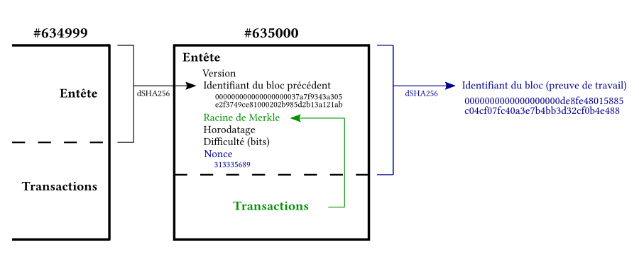

Chaque bloc est lié au bloc précédent en utilisant le hash du bloc précédent.
Validité et consensus

Processus de consensus
Une transaction doit être incluse dans un bloc accepté par le réseau pour être valide.
Le consensus est atteint par des mécanismes tels que la preuve de travail ou la preuve d'enjeu.
Avantages de la structure de la Blockchain
🔒 Sécurité
La blockchain garantit la sécurité des données en les rendant infalsifiables grâce à la technologie
de la cryptographie.
De plus, les contrats intelligents immuables automatisent les processus,
éliminant ainsi les risques d'erreur humaine.
La stabilité et la résilience inhérentes à la
blockchain en font une solution sécurisée pour diverses applications.
🔍 Transparence
La blockchain offre une transparence totale grâce à l'historique des transactions enregistrées de
manière immuable.
Chaque transaction est visible et vérifiable par tous les participants du réseau.
Cette transparence favorise la confiance et permet une traçabilité complète des activités, réduisant
ainsi les risques de fraude et de manipulation.
👤 Gouvernance
La gouvernance décentralisée de la blockchain permet une prise de décision collective et
transparente.
Elle supprime la nécessité d'intermédiaires et permet une création de confiance entre les
parties prenantes.
De plus, la nature open source de la blockchain encourage la collaboration et l'innovation en
permettant à chacun d'accéder au code source et de proposer des améliorations.
Chapitre 2 :
Comprendre le concept des principales Blockchains et leurs différences
Découvrez comment Bitcoin, Ethereum, et Cardano se distinguent
les uns des autres.
Bitcoin : La Pionnière des Cryptomonnaies
Bitcoin, la première cryptomonnaie, a révolutionné le monde financier depuis sa création en 2009. Son
inventeur, connu sous le pseudonyme de Satoshi Nakamoto, a introduit une technologie innovante appelée
blockchain. Cette technologie assure un enregistrement sécurisé et transparent de toutes les transactions.
Décentralisation : Bitcoin opère sur un réseau décentralisé, éliminant le besoin d'une
autorité centrale.
Offre Limitée : Avec une offre plafonnée à 21 millions, Bitcoin est considéré comme une
ressource précieuse.
Réserve de Valeur : À l'instar de l'or, Bitcoin est souvent perçu comme une "réserve de
valeur" en raison de sa rareté.
Ethereum : La Plateforme de Blockchain Innovante
Lancée en 2015, Ethereum est une plateforme open-source de blockchain qui a ouvert la voie à l'ère des
applications décentralisées (dApps). Elle offre un environnement propice pour les développeurs souhaitant
construire et déployer leurs propres dApps.
Contrats Intelligents : Ethereum a révolutionné le monde de la blockchain avec
l'introduction des contrats intelligents, des programmes qui s'exécutent automatiquement lorsque des
conditions prédéfinies sont remplies.
Cryptomonnaie Native : Ether (ETH) est la cryptomonnaie native d'Ethereum, utilisée
pour toutes les transactions et les services de calcul sur le réseau.
Ethereum 2.0 : Ethereum est en cours de transition vers Ethereum 2.0, une mise à jour
majeure visant à améliorer l'évolutivité et la sécurité du réseau.
Ripple : La Solution de Paiement Numérique Rapide
Ripple se distingue comme une plateforme de paiement numérique et une cryptomonnaie. Conçue pour faciliter
des transferts d'argent rapides et économiques à l'échelle mondiale, Ripple est une solution de choix pour
les transactions internationales.
Protocole de Consensus : Ripple utilise un protocole de consensus unique, se
distinguant des méthodes traditionnelles de preuve de travail ou de preuve d'enjeu.
Cryptomonnaie Native : XRP est la cryptomonnaie native de Ripple, utilisée pour
faciliter les transactions sur le réseau.
Utilisation Institutionnelle : Ripple est fréquemment adopté par les banques et autres
institutions financières pour sa rapidité et son efficacité.
Litecoin : L'Argent Numérique du Monde Cryptographique
Créée en 2011 par Charlie Lee, un ancien ingénieur de Google, Litecoin est une cryptomonnaie peer-to-peer
souvent comparée à l'argent, tandis que Bitcoin est considéré comme l'or du monde numérique.
Transactions Rapides : Litecoin se distingue par des temps de transaction plus rapides
que Bitcoin, facilitant une utilisation plus fluide.
Algorithme de Minage Accessible : Contrairement à Bitcoin, Litecoin utilise un
algorithme de minage différent qui est plus accessible aux mineurs individuels.
Offre Maximale : Litecoin a une offre maximale de 84 millions de pièces, quatre fois
plus que celle de Bitcoin.
Cardano : La Plateforme de Contrats Intelligents de Nouvelle Génération
Cardano, créée par Charles Hoskinson, co-fondateur d'Ethereum, est une plateforme de blockchain qui aspire à
redéfinir l'avenir des contrats intelligents. Elle se distingue par son approche basée sur la recherche et
son engagement envers l'innovation scientifique.
Approche Basée sur la Recherche : Cardano se distingue par son engagement envers
l'innovation scientifique, avec une approche de développement basée sur la recherche.
Algorithme Unique : Cardano utilise un algorithme de preuve d'enjeu unique appelé
Ouroboros, qui offre une sécurité et une efficacité améliorées.
Cryptomonnaie Native : ADA est la cryptomonnaie native de Cardano, utilisée pour les
transactions et les services de calcul sur le réseau.
Polkadot : La Plateforme Multi-Chaîne pour une Interopérabilité Sans Précédent
Polkadot est une plateforme multi-chaîne innovante qui permet le transfert de tout type de données ou
d'actifs, pas seulement des tokens, entre les blockchains. Son objectif principal est d'améliorer
l'interopérabilité entre les différentes blockchains, créant ainsi un réseau plus intégré et efficace.
Modèle de Sécurité : Polkadot utilise un modèle de preuve d'enjeu nominée pour garantir
la sécurité de son réseau.
Efficacité Énergétique : Par rapport aux blockchains conventionnelles, Polkadot
consomme une fraction de l'énergie, ce qui en fait une option plus durable.
Empreinte Carbone Minimale : Selon des recherches récentes, Polkadot a l'empreinte
carbone la plus faible parmi les protocoles de preuve d'enjeu, soulignant son engagement envers la
durabilité.
🔍 Comparaison des Cryptomonnaies
Cryptomonnaie
Date de création
Créateur
Offre maximale
Particularités
🔶 Bitcoin
2009
Satoshi Nakamoto
21 millions
Première cryptomonnaie, utilisée comme une
"réserve de valeur"
🔷 Ethereum
2015
Vitalik Buterin
Aucune limite
Introduction des contrats intelligents,
utilisée pour créer des dApps
💠 Ripple
2012
Chris Larsen & Jed McCaleb
100 milliards
Utilisé pour les transferts d'argent rapides
et peu coûteux à l'échelle mondiale
🔘 Litecoin
2011
Charlie Lee
84 millions
Temps de transaction plus rapide que
Bitcoin, accessible aux mineurs individuels
🔵 Cardano
2017
Charles Hoskinson
45 milliards
Approche basée sur la recherche, engagement
envers l'innovation scientifique
🔴 Polkadot
2020
Gavin Wood
Aucune limite
Améliore l'interopérabilité entre les
différentes blockchains, faible empreinte carbone
Chapitre 3 : Opportunités et Risques
des Cryptomonnaies
Découvrez les avantages
potentiels et les défis inhérents à l'investissement et à l'utilisation des cryptomonnaies.
Opportunités Offertes par les Cryptomonnaies
Indépendance Financière : Les cryptomonnaies offrent une alternative aux institutions
financières traditionnelles.
Potentiel de Rendement Élevé : Les cryptomonnaies peuvent offrir des rendements
significatifs, bien que risqués.
Accessibilité : Facilité d'accès et d'utilisation, rendant les cryptomonnaies
accessibles à tous.
Transparence et Sécurité : La technologie blockchain offre une transparence et une
sécurité inégalées.
Transactions Internationales : Les cryptomonnaies facilitent les transactions
internationales.
Risques Associés aux Cryptomonnaies
Volatilité des Prix : Les cryptomonnaies sont notoirement volatiles, ce qui peut
entraîner des pertes importantes.
Risque de Perte Totale : Il existe un risque de perte totale de l'investissement.
Fraude et Piratage : Les cryptomonnaies peuvent être ciblées par des fraudeurs et des
pirates informatiques.
Manque de Réglementation : Le manque de réglementation peut entraîner un manque de
protection pour les investisseurs.
Activités Illégales : Les cryptomonnaies peuvent être utilisées à des fins illégales.
Gestion des Risques des Cryptomonnaies
Investissement Responsable : Ne pas investir plus que ce que vous pouvez vous permettre
de perdre.
Recherche Approfondie : Il est essentiel de faire des recherches approfondies avant
d'investir dans les cryptomonnaies.
Sécurité des Portefeuilles : Utiliser des portefeuilles sécurisés pour stocker vos
cryptomonnaies.
Implications Fiscales : Être conscient des implications fiscales de l'investissement en
cryptomonnaies.
Conseil Financier : Considérer l'aide d'un conseiller financier pour naviguer dans le
monde des cryptomonnaies.
Annonce : Test à venir
J1 : Introduction à la Blockchain et aux Cryptomonnaies (Oo 1.1, 2.1)
Présentation du cours et des objectifs
Introduction à la Blockchain : définition, histoire et importance
Les principes de base de la Blockchain : cryptographie, transactions, blocs
Types de Blockchain : publique, privée, consortium
Activité pratique : Utilisations actuelles de la Blockchain
J2 : Structure et Concept des Blockchains (Oo 2.1, 2.2, 3.1)
Comprendre la structure d’une Blockchain
Comprendre le concept des principales Blockchains et leurs différences
Opportunités et risques liés aux cryptomonnaies
Introduction aux principales crypto-technologies
➷ Test sommatif théorique
Le test aura lieu dans :
The end
Merci de votre attention :-)
"Les cryptomonnaies sont comme des clés magiques : elles ouvrent des portes dans le monde virtuel, mais ne
perdez jamais la clé !"